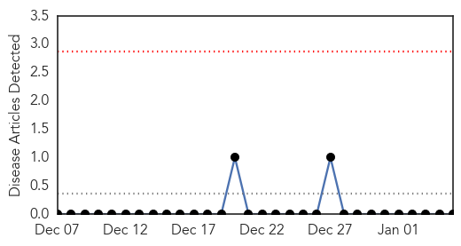
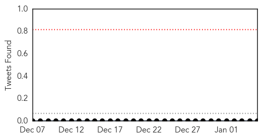
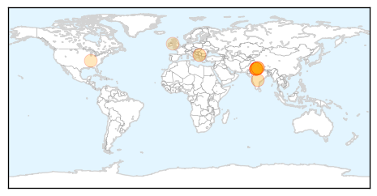
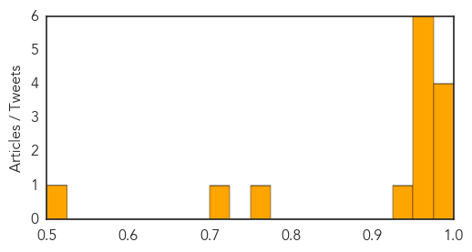

Hemmorhagic Fever
30-Day Web Trend
0 alerts, 0 warnings

30-Day Twitter Trend
0 alerts, 0 warnings

Article Locations

Article Confidences

Top Articles:
-
No articles found for Jan 05, 2015
Top Tweets:
-
No tweets found for Jan 05, 2015
Swine Flu
30-Day Web Trend
4 alerts, 3 warnings
30-Day Twitter Trend
0 alerts, 0 warnings

Article Locations
Article Confidences
Top Articles:
- 0.999
- Woman dies of swine flu in Kosovo
- 0.997
- Health Minister asks Centre, State Govts to be prepared to tackle swine flu
- 0.987
- US-bound students seek H1N1 shots in Hyderabad
- 0.982
- Spread of swine flu cases fear in India
- 0.971
- Four swine flu cases in Delhi; Health Min says no need to panic
- 0.969
- J P Nadda asks Centre, State governments to be prepared to tackle H1N1
- 0.967
- Flu death tally climbs
- 0.966
- 4 swine flu cases in Delhi; Health Minister J P Nadda says no need to panic
- 0.966
- 4 swine flu cases in Delhi; health minister JP Nadda says no need to panic
- 0.950
- Stock up swine flu medicines, Nadda tells states
- 0.928
- Stock up swine flu medicines, Nadda tells states
- 0.775
- Muhlenberg Schools Attendance at Average Level for First Day Back
- 0.715
- 561 people waiting for Emergency Department admissions as overcrowding hits 'record levels'
- 0.516
- Health minister makes surprise visit to hospital in Delhi
Top Tweets:
-
No tweets found for Jan 05, 2015